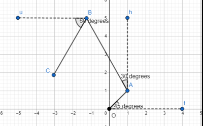

The Walker
Points: 6 kyu
Kata ID: 5b40b666dfb4291ad9000049

The walker
The walker starts from point O, walks along OA, AB and BC. When he is in C (C will be in the upper half-plane), what is the distance CO? What is the angle tOC in positive degrees, minutes, seconds?
Angle tOA is alpha (here 45 degrees), angle hAB is beta (here 30 degrees), angle uBC is gamma(here 60 degrees).
Task
function solve(a, b, c, alpha, beta, gamma) with parameters
- a, b, c: positive integers in units of distance (stand for OA, AB, BC)
- alpha, beta, gamma: positive integers in degrees (positive angles are anticlockwise)
returns an array:
- first element: distance CO (rounded to the nearest integer)
- then angle tOC with the third following elements:
- second element of the array: number of degrees in angle tOC (truncated positive integer)
- third element of the array: number of minutes in angle tOC (truncated positive integer)
- fourth element of the array: number of seconds in angle tOC (truncated positive integer)
Example:
print(solve(12, 20, 18, 45, 30, 60)) -> [15, 135, 49, 18]
- CO is 14.661... rounded to 15
- angle tOC is 135.821...
so
- degrees = 135
- minutes = 49.308...
- seconds = 18.518...
hence [15, 135, 49, 18]
Note
If you need the constant pi you can use pi = 3.14159265358979323846